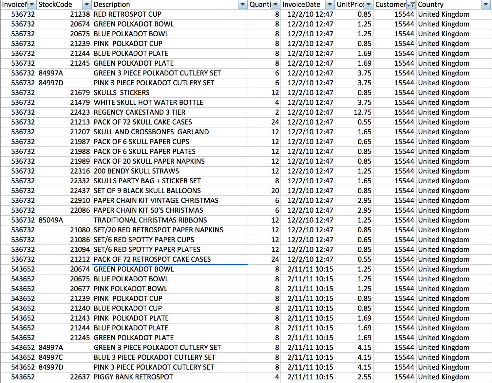

Alternating Least Square example with SPARK
By Mohcine Madkour, Sun 09 April 2017, in category Temporal data
By Mohcine Madkour, Sun 09 April 2017, in category Temporal data
This is a transnational data set which contains all the transactions occurring between 01/12/2010 and 09/12/2011 for a UK-based and registered non-store online retail. The company mainly sells unique all-occasion gifts. Many customers of the company are wholesalers. FullFile.png

#Download the data from github to the local directory
!rm 'OnlineRetail.csv.gz' -f
!wget https://raw.githubusercontent.com/rosswlewis/RecommendationPoT/master/OnlineRetail.csv.gz
loadRetailData = sc.textFile("OnlineRetail.csv.gz")
loadRetailData.take(3)
The header is the first line in the RDD -- use first() to obtain it. Use the filter() method to filter out all lines which are not equal to the header line. Map the split() method to the remaining lines to split on ","
header = loadRetailData.first()
splitColumns = loadRetailData.filter(lambda line: line != header).map(lambda l: l.split(","))
The original file at UCI's Machine Learning Repository has commas in the product description. Those have been removed to expediate the lab. Only keep rows that have a quantity greater than 0, a non-empty customerID, and a non-blank stock code after removing non-numeric characters.
-Examine the header to determine which fields need to be used to filter the data. - Use the filter() method for the first two requirements. Note -- you may have to cast values. - Look at the re.sub() method
import re
filteredRetailData = splitColumns.filter(lambda l: int(l[3]) > 0 and len(re.sub("\D", "", l[1])) != 0 and l[6] != "")
Use the following for the Row column names: inv, stockCode, description, quant, invDate, price, custId, country. inv, stockCode, quant and custId should be integers. price is a float. description and country are strings (the default).
Hint: When you replaced non-digit characters using the regular expression above, you replaced them in the context of a test. You'll have to do it again when creating the stockCode Row value.
-We haven't used SQLContext or Row in this notebook, so you will have to import them from the pyspark.sql package and then create a SQLContext -You can create a Row using a map(). For example: example = myRDD.map(lambda x: Row(v1=x[1], v2=int(x[2]), v3=float(x[3])) Note how we set the column names this way -use createDataFrame() in your SQLContext. Then register the dataframe with registerTempTable() from pyspark.sql import SQLContext, Row sqlContext = SQLContext(sc)
from pyspark.sql import SQLContext, Row
sqlContext = SQLContext(sc)
from pyspark.sql import SQLContext, Row
sqlContext = SQLContext(sc)
retailRows = filteredRetailData.map(lambda l: Row(inv=int(l[0]), stockCode=int(re.sub("\D", "", l[1])), description=l[2], quant=int(l[3]), invDate=l[4], price=float(l[5]), custId=int(l[6]), country=l[7]))
retailDf = sqlContext.createDataFrame(retailRows)
retailDf.registerTempTable("retailPurchases")
The Alternating Least Squares algorithm requires three values. In this case, we're going to use the Customer ID (custId), stock code (stockCode) and a ranking value. In this situation there is not a ranking value within the data, so we will create one. We will set a value of 1 to indicate a purchase since these are all actual orders. Set that value to "purch".
After doing the select, group by custId and stockCode. - To add a fixed value within a select statement, use something like select x,y,1 as purch from z - - Use the group by statement to group results. To group by two values, separate them by commas (i.e. group by x,y)
query = " SELECT custId, stockCode, 1 as purch FROM retailPurchases group by custId, stockCode"
uniqueCombDf = sqlContext.sql(query)
testDf, cvDf, trainDf = uniqueCombDf.randomSplit([.1,.1,.8])
ALS attempts to estimate the ratings matrix R as the product of two lower-rank matrices, X and Y, i.e. X * Yt = R. Typically these approximations are called ‘factor’ matrices. The general approach is iterative. During each iteration, one of the factor matrices is held constant, while the other is solved for using least squares. The newly-solved factor matrix is then held constant while solving for the other factor matrix.
Latent Factors / rank The number of columns in the user-feature and product-feature matricies Iterations / maxIter The number of factorization runs
To use the ALS class type: from pyspark.ml.recommendation import ALS
When running ALS, we need to create two separate instances. For both instances userCol is custId, itemCol is stockCode and ratingCol is purch.
For the first instance, use a rank of 15 and set iterations to 5. For the second instance, use a rank of 2 and set iterations to 10. Run fit() on both instances using the training dataframe.
from pyspark.ml.recommendation import ALS
als1 = ALS(rank=15, maxIter=5, userCol="custId", itemCol="stockCode", ratingCol="purch")
model1 = als1.fit(trainDf)
from pyspark.ml.recommendation import ALS
als1 = ALS(rank=15, maxIter=5, userCol="custId", itemCol="stockCode", ratingCol="purch")
model1 = als1.fit(trainDf)
als2 = ALS(rank=2, maxIter=10, userCol="custId", itemCol="stockCode", ratingCol="purch")
model2 = als2.fit(trainDf)
Use the models to predict what the user will rate a certain item. The closer our model is to 1 for an item a user has already purchased, the better.
Some of the users or purchases in the cross validation data may not have been in the training data. Let's remove the ones that aren't. To do this obtain all the the custId and stockCode values from the training data and filter out any lines with those values from the cross-validation data.
-At the end, print out how many cross-validation lines we had at the start -- and the new number afterwords. -Use map() to return a specific value (i.e. foo = foo.map(lambda x: x.value)) and put them all in a set (i.e. foo1 = set(foo)) -You need all the returned values (remember they might be spread all across the cluster!) so run collect() on the results of the map(). (i.e. foo1 = set(foo.collect())) - Use the filter() to filter out any values in the cross-validation dataframe which are in the stockCode or custId sets. Use toDF() to change the results to a dataframe.
customers = set(trainDf.rdd.map(lambda line: line.custId).collect())
stock = set(trainDf.rdd.map(lambda line: line.stockCode).collect())
filteredCvDf = cvDf.rdd.filter(lambda line: line.stockCode in stock and line.custId in customers).toDF()
print cvDf.count()
print filteredCvDf.count()
predictions1 = model1.transform(filteredCvDf)
predictions2 = model2.transform(filteredCvDf)
The lower the result number, the better the model.
meanSquaredError1 = predictions1.map(lambda line: (line.purch - line.prediction)**2).mean()
meanSquaredError2 = predictions2.map(lambda line: (line.purch - line.prediction)**2).mean()
print 'Mean squared error = %.4f for our first model' % meanSquaredError1
print 'Mean squared error = %.4f for our second model' % meanSquaredError2
Filter the test dataframe (testDf) the same way as the cross-validation dataframe. Then run the transform() and calculate the mean squared error. It should be the same as the value calcuated above.
filteredTestDf = testDf.rdd.filter(lambda line: line.stockCode in stock and line.custId in customers).toDF()
predictions3 = model2.transform(filteredTestDf)
meanSquaredError3 = predictions3.map(lambda line: (line.purch - line.prediction)**2).mean()
print 'Mean squared error = %.4f for our best model' % meanSquaredError3
Use the Dataframe methods to create a Dataframe with a specific user and that user's purchased products. First, use the Dataframe filter() to filter out all custId's but 15544. Then use the select() to only return the custId column. Now use distinct() to ensure we only have the single custId. Do a join() with the distinct values from the stockCode column.
user = trainDf.filter(trainDf.custId == 15544)
userCustId = user.select("custId")
userCustIdDistinct = userCustId.distinct()
stockCode = trainDf.select("stockCode")
stockCodeDistinct = stockCode.distinct()
userItems = userCustIdDistinct.join(stockCodeDistinct)
bestRecsDf = model2.transform(userItems)
bestRecsDf.first()
In order to print the top five recommendations, we need to sort() them in descending orde

This user seems to have purchased a lot of childrens gifts and some holiday items. The recommendation engine we created suggested some items along these lines